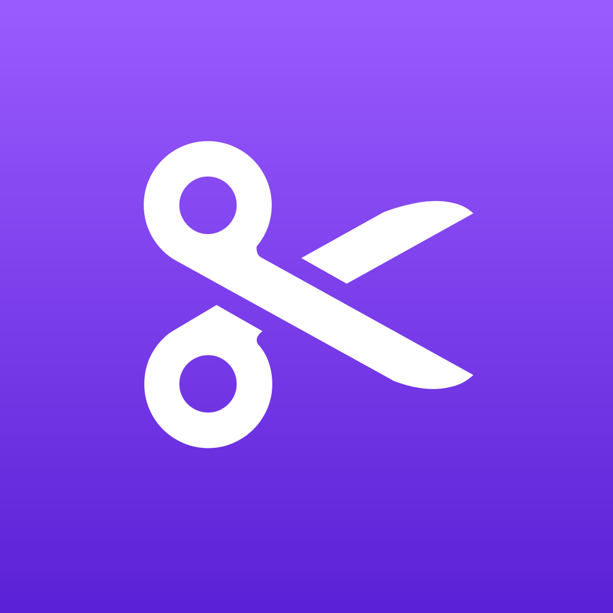

Clip MakerPrivacy Policy
Last updated: November 18, 2026
Clip Maker is a desktop program that runs on your own Windows computer. It turns your own stream recordings (or streams you have permission to use) into short vertical clips and, if you choose, uploads them to your own TikTok, YouTube or Instagram account.
What Clip Maker accesses
- When you connect TikTok, Clip Maker receives from TikTok: your account's display name, an identifier for your account (open_id), and access/refresh tokens that let it upload videos you choose to your account. It requests only these permissions:
- user.info.basic - to show which TikTok account is connected.
- video.upload - to send clips you have made to your TikTok inbox, where you review and post them.
- The video files you choose to upload, and the caption text you write or approve.
Where your data is stored
- Everything is stored only on your own computer, in the Clip Maker folder (the login tokens are in a file called accounts.json, and your clips are in the folder you choose).
- The developer of Clip Maker does not run any server and does not receive, collect, store, sell or share any of your data or your TikTok information.
Who your data is sent to
- TikTok: the videos you choose to upload, sent directly from your computer to TikTok's official Content Posting API.
- Optional services you turn on yourself: YouTube (Google) and Instagram (Meta) if you connect them, and Anthropic's Claude API if you add your own API key to write titles and captions (in that case the spoken words of a clip are sent to Anthropic to write its title). Each of these services has its own privacy policy.
Your choices
- You can disconnect TikTok at any time in Clip Maker (Settings > Auto-post > Disconnect), which deletes the stored tokens from your computer. You can also remove Clip Maker's access in the TikTok app under Settings and privacy > Security > Apps and services permissions.
- Deleting the Clip Maker folder removes all data it stored.
Children
Clip Maker is not intended for children under 13 (or the minimum age to use TikTok in your country).
Changes
If this policy changes, the new version will be posted on this page with a new date.
Contact
Questions: harrybarry2133@gmail.com